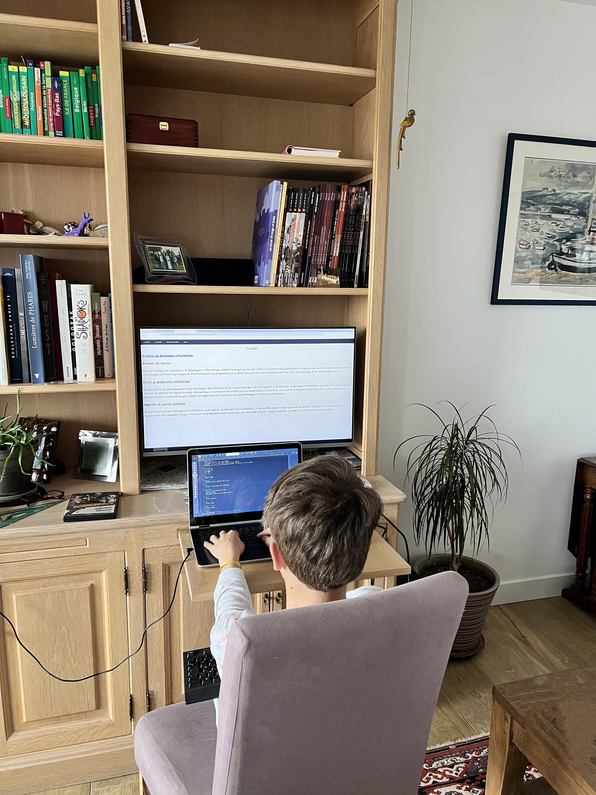

le métier de développeur informatique Analyser les besoins Lors de la phase de conception, le développeur informatique analyse le projet qui lui est confié, en fonction des besoins des utilisateurs qui sont consignés dans un cahier des charges. Il étudie les étapes de fonctionnement du programme, puis détermine une solution technique avant de créer un prototype de la future application. Écrire un programme informatique Ce spécialiste du développement peut se charger de l'écriture d'une ou plusieurs parties d'un logiciel, d'un site web, d'une application mobile, voire le concevoir dans sa totalité. Il détaille les lignes de code informatique, c'est-à-dire les ordres que va comprendre l'ordinateur, en utilisant le langage dédié (Java, C++, html, CSS ...). Il participe aux phases d'essais, essentielles pour tester les applications et effectue les paramétrages et retouches nécessaires. Apporter un soutien technique Il réalise les notices techniques d'installation, ainsi que les guides pour les utilisateurs. Il est parfois amené à leur apporter un soutien technique ou à les former à l'application. Par exemple, lorsqu'il construit un programme spécifique pour une demande précise, il pourra assurer les mises à jour afin de le faire évoluer.